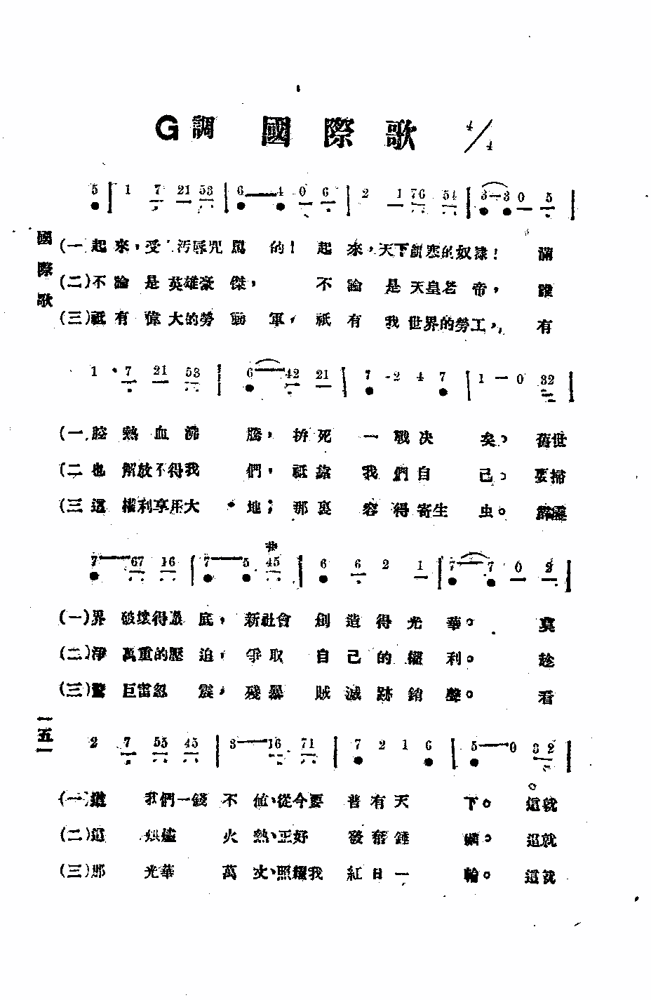
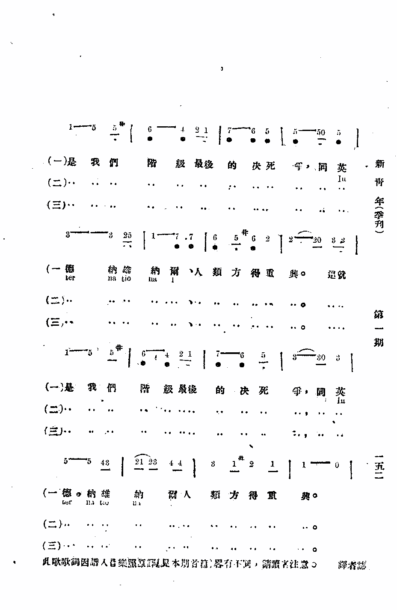

1296
Arise, Be Free, Ye
Slaves Of Sin
310跟随救主
[華]
|
|
|
|
吳斌
of Wesleyan Methodist Missionary Society in Pingjiang
of Hunan 起來 楊蔭瀏 |
310跟随救主
-
起來！全世界的罪人：你們受盡了多少的痛苦：
看哪！基督乃是救主，祂將人類的罪惡擔負。
-
起來！全世界的罪人：你們深入了黑暗的迷途：
看哪！基督乃是真光，祂已指示那光明天路。
-
起來！全世界的罪人：你們掙脫了魔鬼的掌握：
看哪！基督乃是生命，祂要賜給你真理自由。
-
起來！全世界的罪人：你們揭穿了人類的黑幕：
看哪！基督乃是大道，祂是實行的「天下為公」。
-
起來！全世界的罪人：你們跟隨了基督的腳步：
看哪！天國已經近了，我們大家來歡呼鼓舞。
副歌：起來！起來！全世界的罪人：起來起來背自己十字架，
與惡魔奮鬥，跟隨我主走。（阿們）。
|
|
https://www.mred365.cn/szxg/7313.html

|
|
|
|

LX1296
Arise, Be Free, Ye
Slaves Of Sin
310跟随救主
[華]
8 "Xiugai shengshi weiyuanhui qishi: Xuanjiang zhengji chuangzuo de shengshi
修改聖詩委員會啓事：懸獎徵•丨J作的聖詩，” Jiaoxun教訊，Sheng GongHui bao聖公會報22，no.2 (1928), 10; "Zhonghua
Sheng Gong Hui qishi: Xuanjiang zhengji chuangzuo de shengshi
中華聖公會禱事：懸獎徵集創作的聖詩，”沿口 興華 no.5-11. (January-March/ 1929).
99 The major winners of the competition for original hymns turned out to be
non-Anglicans: Champion belonged to
-
Yang Jingqiu 楊鏡秋 of Methodist Episcopal Church, South, in
Wujing of Jiangsu. Other winners included
-
Wang Jinxi 溪 of Methodist Episcopal Church, North, in Beiping;
-
Wu Xiaowu/ Wu Bin 吳笑吾/ 吳斌
ofWesleyan Methodist Missionary Society in Pingjiang of Hunan; and
-
Chen Dingan 陳定安，named as Chen Wenan 陳文安 in another occasion, of
Middle School ofXinping County in Yunnan.
See Wang, Sheng shi diem kao, 25-26; "Zhonghua Sheng Gong Hui qishi: Xuanjiang
zhengji chuangzuo shengshi dejiexiao 中華聖公會啓事：懸獎創作聖詩的揭曉，” Zhuanjian 專件，Sheng
GongHui bao 聖公會報 22, no. 17-18，22; The Union Hymnal Committee, ed., Universal
Praise.
https://core.ac.uk/download/pdf/48549043.pdf

K03B
普天頌讚當代聖詩作者
吳斌
Pin, Wu, 1905-
https://.org/person/Pin_W1
NIL
Author:
Pin Wu (1929); Translator:
Frank W. Price (1953)
Tune: CH'I-LAI
Composer: Ernest Y. L. Yang (1930); Harmonizer:
I-to Loh (1981)
111跟随救主
本首中國曲風濃厚的詩歌，曲調為楊蔭瀏（Ernest Y. L. Yang, 1899-1984）所譜。楊蔭瀏為江蘇無錫人，自幼喜歡音樂，6歲時隨鄰居的小道士學習中國樂器。10歲時，他隨美國聖公會女傳教士郝路義（L.
S.Hammond）學英文、鋼琴、樂理、和聲和對位；而以教她中國詩詞、音韻和昆曲作為交換。他21歲受洗加入聖公會，1923年進上海聖約翰大學攻讀經濟系。1925年五三慘案時，他和數百位同學因參加愛國運動而離校。
1929年，他應聖公會之聘，負責編印《頌主詩集》。1932年赴燕京大學音樂系旁聽作曲與西洋音樂史時，與劉廷芳博士共同編纂《普天頌讚》，並在宗教刊物上撰寫「聖歌與聖樂」專欄。他在1936年任哈佛燕京學社研究員，繼而任中央音樂院教授，中國音樂研究所所長等職。1981年，《讚美詩新編》編輯委員會聘請楊氏當顧問，他在作曲、編曲和譯詞方面都非常卓越，其一生對中國民族音樂及教會聖詩貢獻至鉅，是少有的中國音樂學者。
本詩由普萊斯（Frank W. Price, 1885-1974）填詞，普萊斯是19世紀初期的美國聖詩作家，其作品多為配合黑人靈歌或民謠填詞，著有Southern
Harmony一書。他曾擔任長老教會在中國的傳教士三十年之久。1953年，普萊斯為美國長老教會的世界傳教教育機構選錄並翻譯了23首中文的讚美詩，收錄於Chinese
Christian Hymns，本詩亦收錄於其中。
本詩英文版引自《羅馬書》第六章6節：「因為知道我們的舊人和祂同釘十字架，使罪身滅絕，叫我們不再作罪的奴僕。」；中文版引自《馬太福音》第十六章24節：「於是，耶穌對門徒說：若有人要跟從我，就當捨己，背起他的十字架來跟從我。」內容都說明人們在信仰的道路上必須起身跟隨基督救主，才得以
對抗罪惡的救贖理念。
註：曲調名，查無資料。
国际歌歌词的第二句现在是:起来 全世界的受苦人;早些的歌词是:起来 全世界的罪人!这重大改写是何原因?
可能是因为-"罪人"主要是指犯人,好坏难分!受苦人就主要指穷人,无产阶级!
https://zhidao.baidu.com/question/244489733.html
1923年瞿秋白译本
整理者按：刊载于中共中央机关刊物《新青年》季刊，1923年6月15日第1期，第6-10页。
这是中国历史上第一个中文《国际歌》完整译本，由瞿秋白翻译。瞿秋白最早将《L’Internationale》歌名译为《国际歌》，也是最早在中国公开传唱《国际歌》的，他本人也正是唱着这首他所翻译的《国际歌》英勇就义的。
“国际”一字，欧洲文为“International”，歌时各国之音相同；华译亦当译音，故歌词中凡遇“国际”均译作“英德纳雄纳尔”。
此歌自一八七〇年后已成一切社会党的党歌，如今劳农俄国采之为“国歌”，将来且成世界共产社会之开幕乐呢。欧美各派社会党，以及共产国际无不唱此歌，大家都要争着为社会革命歌颂。
此歌原本是法文，法革命诗人柏第埃（Porthier）所作，至巴黎公社（La Commune de
Paris）时，遂成通行的革命歌，各国都有译本，而歌时则声调相同，真是“异语同声”——世界大同的兆象。
诗曲本不必直译，也不宜直译，所以中文译本亦是意译，要紧在有声节韵调能高唱。可惜译者不是音乐家，或有许多错误，然而也正不必拘泥于书本上的四声阴阳。但愿内行的新音乐家，矫正译者的误点，今中国受压迫的劳动平民，也能和世界的无产阶级得以“同声相应”。再则法文原稿，本有六节，然各国通行歌唱的只有三节，中国译文亦暂限于此。
起来，受人污辱咒骂的！
起来，天下饥寒的奴隶！
满腔热血沸腾，
拼死一战决矣。
旧社会破坏得彻底，
新社会创造得光华。
莫道我们一钱不值，
从今要普有天下。
这是我们的
最后决死争，
同英德纳雄纳尔（International）
人类方重兴！
这是我们的
最后决死争，
同英德纳雄纳尔（International）
人类方重兴！
不论是英雄，
不论是天皇老帝，
谁也解放不得我们，
只靠我们自己。
要扫尽万重的压迫，
争取自己的权利。
趁这洪炉火热，
正好发愤锤砺。
这是我们的
最后决死争，
同英德纳雄纳尔（International）
人类方重兴！
这是我们的
最后决死争，
同英德纳雄纳尔（International）
人类方重兴！
只有伟大的劳动军，
只有我世界的劳工，
有这权利享用大地，
哪里容得寄生虫！
霹雳声巨雷忽震，
残暴贼灭迹销声。
看！光华万丈，
照耀我红日一轮。
这是我们的
最后决死争，
同英德纳雄纳尔（International）
人类方重兴！
这是我们的
最后决死争，
同英德纳雄纳尔（International）
人类方重兴！
|


先知在1917 收集、整理
1926年国民革命军版
1926年3月18日，国民革命军在纪念巴黎公社成立55周年时，印制了一张乐谱，上有三节中文《国际歌》歌词，大致为欧仁·鲍狄埃原诗第一、二、六节。
起来饥寒交迫的奴隶，
起来全世界上的罪人！
满腔的热血已经沸腾，
作一最后的战争！
旧世界打他落花流水，
奴隶们起来起来！
莫要说我们一钱不值，
我们要做天下的主人！
（副歌）
这是最后的争斗，
团结起来到明天，
英特尔拉雄纳尔
就一定要实现。
从来没有什么救世主，
不是神仙也不是皇帝。
更不是那些英雄豪杰，
全靠自己救自己！
要杀尽那些强盗狗命，
就要有牺牲精神。
快快的当这炉火通红，
趁火打铁才能够成功！
（副歌）
谁是世界上的创造者？
只有我们劳苦的工农。
一切只归生产者所有，
哪里容得寄生虫！
我们的热血流了多少，
只把那残酷恶兽。
倘若是一旦杀灭尽了，
一轮红日照遍五大洲！
（副歌） |
https://www.marxists.org/chinese/internationale/01.htm
維基百科，自由的百科全書
跳至導覽跳至搜尋

1949年國立音樂院國樂組第三屆畢業生合影，後排左二即楊蔭瀏
楊蔭瀏（1899年11月10日－1984年2月25日），字亮卿，號二壯，又號清如，中國音樂史和音樂理論家，對國樂的保存和發展做出了很大的貢獻。本人擅彈琵琶及三絃等中國樂器。[1][2]
楊蔭瀏出生於光緒三十五年十月初八（1899年11月10日）江蘇無錫留芳聲巷，[2] 與楊絳同族、更與楊蔭榆同輩，母親錢淑珍是錢基博的叔伯姊妹、哥哥楊蔭溥後來成為了經濟學家。[3] 幼時在家和私塾中接受傳統教育，6歲開始向鄰里學習江南絲竹。待到青少年時期，楊蔭瀏先後在無錫東林小學和師範接受教育。1911年師從吳畹卿在無錫的天韻社學習唱崑曲及琵琶、三絃，直到楊蔭瀏二十七歲左右吳畹卿去世為止，二人都保持著師生關係，[4] 他實際上也是天韻社的最後一代傳人。同時，楊蔭瀏在12歲時從美國女傳教士郝路義（Louise
Strong Hammand）學習鋼琴及西方音樂理論，二人關係十分密切，楊蔭瀏自述曾叫郝路義乾媽。1920年加入中華聖公會成為基督教徒。[1] 1921年自無錫第三師範學校畢業。[5]
1923年至1925年進入上海的聖約翰大學經濟系與光華大學（今華東師範大學）學習，但在1926年輟學，輾轉在無錫、宜興擔任中學教師，1928年還在宜興中學教書的楊蔭瀏被任命為「中華聖公會統一讚美詩委員會」成員，參加聖公會的讚美詩編輯工作，同年秋辭去宜興中學職務開始專門編寫讚美詩。1931年編成《頌主詩集》，在教會內部刊印。不久中華基督教會聯合中華「六公會」組成「聯合聖歌委員會」，楊蔭瀏亦是32名委員會成員之一。[1] 1936年至1937年任北平哈佛燕京學社音樂研究員、1940年代擔任國立音樂院國樂系與金陵女子大學音樂系教授，亦曾在擔任禮樂館編纂、樂典組主任等職。1945年抗戰結束後隨國立音樂院前往南京，此時接到哈佛大學去教授中國音樂史的邀請，但認為「脫離了中國音樂的實際環境就無法研究中國音樂的歷史和現狀」而拒絕。1949年中華人民共和國成立後，楊蔭瀏進入中央音樂學院擔任教授，後來歷任音樂研究所副所長、所長，與呂驥、李元慶並稱音樂研究所的「三駕馬車」。此外也擔任過中國音樂家協會常務理事。1950年暑假和表妹曹安和一起到無錫給阿炳錄下了名曲《二泉映月》。[6][7] 文化大革命爆發後被下放到幹校。[7] 1980年左右任中國藝術研究院顧問。1984年2月25日在北京病逝。[5]
楊蔭瀏專攻中國音樂史、樂律學與民族音樂研究，做過大量的中國民樂搜集、整理以及研究工作，常說：「中國古代音樂史不能成為『啞巴』音樂史」。[8]同時他也試圖融合中西音樂理論並解決民族音樂古今脫節的現象。在1949年之前，楊蔭瀏就整理了很多民族音樂書譜，包括《雅音集》、《笛譜》、《簫譜》和《文板十二曲線譜》等，其重要著作《國樂概論》與《中國音樂史綱》也是在這一時期完成的。此外，楊蔭瀏曾師從心理學家劉廷芳、物理學家丁燮林研究聲學，為民族樂器與樂律研究開創了新的研究領域。[5]
中華人民共和國建立之後完成的主要作品為1982年著成的《中國古代音樂史稿》，此外還進行過姜白石詞譜譯解、古樂器考古與測音研究工作等。晚年總結平生所學得出《管律辨訛》、《三律考》。[5] 中國音樂史在他一代幾於大成，楊蔭瀏自己曾說：「我希望以後的年輕人，不要再去編中國音樂史，你們不可能達到一個我這樣的程度，你們應該去搞斷代史和專題。」此外他對當時流行音樂界頗為反感，曾批評「交響樂、歌劇才是資產階級的東西，資產階級瞧不起鄧麗君這樣的東西」。[7]
- 《雅音集》（第一和第二集，1923-1929）
- 《頌主詩集》（1931）
- 《國樂概論》（1943）
- 《中國音樂史綱》（1943）
- 《中國音樂史新舊音階的相互影響》（1945）
- 《白石道人歌曲研究》 （與陰法魯合著，1957）
- 《如何對待五聲音階與七聲音階同時存在的歷史情況》（1959）
- 《語言音樂學初探》（1963）
- 《律學的目的性與傾向性》 （1965）
- 《中國古代音樂史稿》（1982）
參考文獻[編輯]
https://zh.wikipedia.org/wiki/%E6%A5%8A%E8%94%AD%E7%80%8F
-
楊蔭瀏
楊蔭瀏（1899年—1984年2月25日），字亮卿，號二壯，又號清如，音樂教育家，中國
民族音樂學的奠基者。對無錫
道教音樂、青城山道教音樂、中國基督教聖樂、北京
智化寺音樂、
西安鼓樂、五台山寺廟音樂、湖南宗教音樂等進行了深入的調查研究，堪稱宗教音樂研究領域的先鋒。
建國後，楊蔭瀏任
中央音樂學院研究部研究員、教授，音樂研究所副所長、所長，及
中國音樂家協會常務理事。他用30多年時間和畢生心血編著了《
中國古代音樂史稿》。完成專著20多種、論文近百篇。其中有《
天韻社曲譜》《雅音集》《文板十二曲琵琶譜》《古琴曲彙編》《關漢卿戲曲樂譜》《語言音樂學初探》等。
[1]
楊蔭瀏會多種樂器，尤擅竹笛，得到
吳畹卿嫡傳，夙負盛名。吹奏時，高音晶瑩清澈，低音細若遊絲，故被譽為“楊
笛子”。
-
中文名
-
楊蔭瀏
-
別 名
-
字亮卿，號二壯，又號清如
-
國 籍
-
中國
-
出生日期
-
1899年
-
逝世日期
-
1984年2月25日
-
畢業院校
-
上海聖約翰大學
-
職 業
-
音樂教授
-
主要成就
-
我國音樂史成有樂譜的音樂歷史
-
出生地
-
無錫留芳聲巷
-
代表作品
-
中國音樂史綱、中國古代音樂史稿、天韻社曲譜
楊蔭瀏
楊蔭瀏自幼酷愛音樂，從近鄰道士
穎泉學習笛、笙、二胡等民族樂器。12歲起加入無錫“天韻社”，從名曲師
吳畹卿學唱崑曲及演奏
琵琶、
三絃等樂器。
1916年考入江蘇省立第三師範學校，後入輔仁中學學習。
1920年至1930年間從美國傳教士郝路易女士學英文、鋼琴和作曲，後又得到
丁燮林博士幫助，學習
音響學。
1931年任聖公會聯合聖歌委員會委員、總幹事。
1941年至1949年在重慶、南京任國立音樂學院教授兼國樂組主任、國立禮樂館編纂和樂曲組主任、
金陵女子大學音樂系教授。
1950年，他專程回錫搶救錄製
阿炳的6首名曲，並整理編成《
阿炳曲集》出版。“文化大革命”期間，楊蔭瀏下放河北
懷來縣“
五七”幹校，1973年患突發性
腦痙攣，
肺氣腫亦日趨嚴重。
1979年起任
中國藝術研究院顧問，兼任民族音樂委員會主任、第三至第六屆全國政協委員等職。
1984年2月25日在北京逝世。他一生致力於民族音樂遺產的蒐集整理和中國音樂史、樂律、音韻、古譜的研究。
1984年2月25日楊蔭瀏在北京逝世，終年84歲。
[1]
楊蔭瀏自幼酷愛音樂，每當道士做法事時，總要去聽他們的演奏。七八歲時，便同哥哥楊蔭溥一起向三清殿年輕道士
穎泉學習簫、笛、
笙、胡琴等民族樂器，後來又跟
雷尊殿道士
阿炳學習
琵琶，可惜他父親不喜歡阿炳，阿炳僅教了他兩個半天。12歲時，他由老師黃緒初介紹入
天韻社，師從
吳畹卿學習。天韻社是江南著名
民間音樂（崑曲）團體，社友皆無錫音樂界名流，社長吳畹卿的笛、
三絃、琵琶功力深厚，並精
研音韻之學。楊蔭瀏入社後，除學習樂器外，對音韻、音律、樂器構造等發生了濃厚的興趣，曾參予天韻社與來訪的美國音樂家亨利愛希姆在聖公會的中、西音樂交流。
1916年秋，楊蔭瀏高小畢業後考入江蘇省立第三師範學校（今無錫師範），22歲時以優良成績畢業，任石塘灣縣立第五高等小學國文教員。一年後，入無錫輔仁中學學習英文、數理。1923年畢業。同年入上海
聖約翰大學，先後在經濟系（1950年8月併入
上海財經學院，即今
上海財經大學 [2] ）、文學系學習。在校期間，擔任該校國樂會會長，經常參加各大學舉辦的音樂會。
民國初年，美國人郝露易女士來無錫聖公會做傳教士，她有較高的
音樂修養，楊蔭瀏曾從郝露易學習英文、鋼琴和西洋音樂樂理。1921年，又向她學習和聲、對位、
復調等西洋
作曲法。
1925年“
五卅慘案”發生後，楊蔭瀏因積極參加反帝愛國運動，遭校方壓制，憤而離校，入中國人自辦的
光華大學經濟系學習。為了示威遊行宣傳需要，他將《
金陵懷古》曲調填以宋代民族英雄岳飛的《
滿江紅》詞，用以鼓舞人心，這首歌曲影響深遠，迄今還在全國廣泛流傳。1926年2月因家貧輟學。回鄉後，先後在輔仁中學、工商中學、縣初中、榮氏女校、無錫美專、
宜興中學任教。其間曾短期擔任無錫通俗教育館館長。
1929年，楊蔭瀏應基督教聖公會之聘，先後在南京、杭州做讚美詩的編輯工作。1931年，基督教成立六公會聯合聖歌委員會，楊任委員、
總幹事。1932年赴北京與
燕京大學劉廷勞博士編譯修訂讚美詩，並共同主編宗教期刊《紫晶》及《真理與生命》刊物中的“聖歌與聖樂”專欄。這項工作一直延續到1941年。楊所編輯出版的讚美詩集《普天頌讚》，獲國際聖經展覽編輯優良獎，所載讚美詩在國內外教徒中廣為傳唱。
楊蔭瀏在北京期間，在燕京大學音樂系旁聽作曲、西洋音樂史和音樂欣賞課；並在該校圖書館閲讀了大量英、法等國有關音樂的專業書籍。
1936年，任
哈佛燕京學社研究員，同時在燕京大學音樂系講授中國音樂史。1937年暑假回無錫度假，後因“七七”盧溝橋事變發生，不能北上。8月下旬去南京，暫代中央機器廠總務主任，12月，隨廠遷湘潭，翌年8月遷昆明。
幼年故事
阿炳原名
華彥鈞。拉二胡的“
瞎子阿炳”，在當年的無錫是人人耳熟能詳的傳奇人物。他3歲喪母，8歲隨父在
雷尊殿當小道士，學習鼓、笛、二胡、
琵琶各種樂器，12歲就能熟練地演奏各種道教音樂，以後被譽為“小天師”。
有一天，流芳聲巷楊宅請他們去做道場。當天，楊宅門外臨時用毛竹搭了個高台，一個穿鮮豔
龍袍圖案的拜懺道士手拿寶劍在台上揮舞作法，下面穿黑色道服的道士們在打鼓、合鈸、吹管、敲
木魚，有的拉二胡、
彈琵琶奏出美妙動聽的道教音樂，熱鬧非凡。在人羣中，楊宅的兩個小男孩很好奇地看着。大人告訴他們，這是道士在降妖驅魔，為死者超度亡靈，祈求上天賜福。小傢伙對大人的話一句也沒聽進去，反而關注道士手中的樂器，美妙的
道教音樂很吸引他們。而兩個孩子中年齡小一點的弟弟，就是後來成為中國民族音樂奠基人與開創者的楊蔭瀏。
交情
在學習中，楊蔭瀏瞭解到，
阿炳為何有如此功力。原來，在冬天，為了彈好
琵琶，阿炳用冰塊摩擦雙手鍛鍊指功。夏夜練二胡時，將腳泡在水�堙A以防蚊蟲叮咬。他還了解到阿炳父親教他迎寒擊石，模擬擊鼓，練習各種節奏，成為當地有名的司鼓手。楊蔭瀏悟出了一個道理，一切都是勤奮啊！而這一段學習，使楊蔭瀏的琴藝水平有很大的提高，學到了不少民間樂曲。
但楊蔭瀏的父親沒有看到這一方面。他看到的是阿炳缺少禮貌，處事隨便，沒有穎泉老成，更不願看到自己的兒子和小道士一起，於是就中止了兒子和阿炳的學習。可楊蔭瀏還是深深地思念着阿炳——這位埋沒在民間的道教音樂家，給他留下了深刻的、不可磨滅的終身影響。
1937年春天，楊蔭瀏回無錫度假。這時
阿炳已44歲，雙眼早已失明，他從
雷尊殿的當家道長變成一個潦倒不堪的街頭藝人。族人看他孤單一人，難以生活，便介紹
江陰農村貧窮善良的寡婦董彩娣同居照看。於是，無錫街頭巷尾，人們經常看到蓬頭垢面的董彩娣牽着身穿破舊長衫、戴一副墨鏡、腋下夾着的一根小竹竿的阿炳，在無錫的大街小巷走着。阿炳背上揹着一把
琵琶，胸前掛着笙、笛，二胡在他手中咿咿呀呀地拉着。頓時，空氣中飄揚着賣藝乞討所奏出的淒厲欲絕的二胡聲，彷彿訴説自己遭受磨難的悲歌。人們聽到這斷腸之音，也都忍不住感嘆。
不過，阿炳雖然窮困潦倒，仍然堅持他的“三不窮”：“人窮志不窮”，“人窮嘴不窮”，“人窮名不窮”，他為人正直厚道。
回到家鄉的楊蔭瀏自然忘不了啓蒙老師。
阿炳雖看不見他身影，但記得他的聲音。異常激動地握着他手。而談話自然三句不忘本行，又談起民族音樂。當阿炳知道琵琶曲《將軍令》，便要楊蔭瀏撥着他手指，在琵琶上摸到了《將軍令》曲調“澈鼓”的彈奏方法，直到熟練了才罷休。
隨着時間的流逝，阿炳生活越來越艱難，身體也越來越虛弱。1947年，他的肺病發作了，劇烈地咳嗽，再也不能到街上賣藝求乞了，無錫的街頭小巷人們也不再聽到阿炳那悽慘、悲涼的二胡聲了。
他曾多次去雲南、河北、廣西、江蘇等地，對民族
民間音樂進行深入調查，蒐集了許多珍貴的音樂資料。同時在戲曲音樂和宗教音樂方面也作了大量的研究。
楊蔭瀏在研究中國音樂史方面具有傑出的成就。早在1925年他就用英文寫出了《中國音樂史綱》論文。1981年又完成《中國古代音樂史稿》，該書65萬字，
人民音樂出版社1981年出版。這是他在音樂歷史與民族音樂、音律學等方面綜合研究的豐碩成果，使我國音樂史成為有樂譜的音樂歷史。
他通過運算和實驗，先後發表了有關樂律方面的專著和論文，把我國民族音樂實踐中經常遇到的樂律問題及樂律史的研究提高到一個新的水平。
他對我國民族音樂遺產包括民間音樂、戲曲音樂、宗教音樂的發掘、搶救、蒐集、整理、研究工作，都有相當成就和貢獻。
他對家鄉的音樂事業十分關心，每次回無錫，總要對民間音樂團體華光國樂團進行指導，不厭其煩地進行示範；興之所至，甚至同意領銜演出。
他曾為無錫樂器店排老紅木優質
琵琶品位，解決竹笛
音準問題，提高樂器質量。並根據大量實驗結果，製成笛尺，可以按尺開笛孔。
楊蔭瀏畢生著述除鉅著《
中國古代音樂史稿》外，先後出版著作27種，論文近百篇，在我國民族音樂學術的思想寶庫中佔有重要的地位。
楊蔭瀏對無錫
瞎子阿炳的樂曲進行了搶救和整理，並編成《
阿炳曲集》，他在這方面的功績是舉世公認的。
https://baike.baidu.hk/item/%E6%A5%8A%E8%94%AD%E7%80%8F/1757263
自从十九世纪初，英国传教士马礼逊来中国传教以后，中国开始有了外国传教士编译的圣诗本，但那时中国人唱的全都是西方的翻译圣诗，没有自己创作的圣诗。中国人作的圣诗甚少资料可查。
普天颂赞
耶稣会利玛窦景教
维基百科，自由的百科全书
《普天颂赞》 是一本中国基督教新教各大公会的联合诗歌集，初版于1936年由广学会出版。
历史背景
此诗歌集起源于1922年5月2日至12日在上海举行的“基督教全国大会”，在需求殷切及宗派间的共识下，各宗派集合当时所用的诗集，并委派六宗派的代表以《颂主诗集》作底本，约在1936年编辑成了《普天颂赞》，由广学会于上海出版。
这本中英文版诗歌集最初由六个公会，委派代表组成了一个“六公会联合圣歌委员会”来负责编订，现在由香港基督教文艺出版社负责出版。原来的六公会是：
-
中华基督教会全国总会 (Church of Christ in China)
-
中华圣公会 (Chung Hwa Sheng Kung Hwei)
-
美以美会 (Methodist Episcopal Church, North)
-
华北公理会 (North China Kung Li Hui)
-
华东浸礼会 (East China Baptist Convention)
-
监理会 (Methodist Episcopal Church, South)[1]
到1970年，下列每间教会派出2名代表组成普天颂赞谘询委员会：
-
中华基督教会香港区会 (The Hong Kong Council of the Church of Christ in
China)
-
圣公会港澳教区 (The Anglican Church, Hong Kong and Macao Diocese)
-
中华基督教循道公会 (The Chinese Methodist Church)
-
卫理公会（The
Wei Li Kung Hui (The Methodist Church)）
-
潮语浸信会 (The Swatow Baptist Church)[1]
第一修定本于1977年由基督教文艺出版社在香港出版。该修定本的主编是黄永熙博士。[2]
《普天颂赞》新修订版
普天颂赞新修订版（2006）
《普天颂赞》新修订版在2006年9月30日面世，由中华基督教会香港区会、香港圣公会、循道卫理联合教会派出代表组成的新修订版编辑委员会编成。新修订本有916首诗歌，144篇诗篇，并在索引上有经文、分题、祷文标题、礼仪、节庆、版权所有者等不同索引。
新修订版比1977年的修订本较具特色，其中为旧歌谱上新词新调，增加教会年历中节期的用诗，采纳不同时代、风格、颂唱、重句、启应等方式为诗篇里的诗谱写成曲，增加礼仪用途诗歌和圣颂的数量，加入在二十世纪后期兴起的赞美短歌：万民颂歌与灵歌。会聚使用本由纯简谱修订成旋律五线谱加配简谱，在诗歌版面加入圣经经文。
新修订版亦就历史时代及音乐风格的比重作出必须的大幅删减，为旧歌的神学观念与诗词作审查，为艰涩字句附以注释、注音，中文译词则更注意执著修辞的神学语意，不用“上帝”，而选用“上主”等更大公的用语，英文译词则对主神的称号代名词（Thine,
Thou）原词，在不影响头韵或韵脚的情况下予以更新。新修订版诗歌的中文歌名亦有重新选取，旨在表达诗歌主要内容。[3]
普天颂赞初版序

{kind=link}